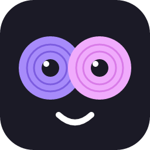
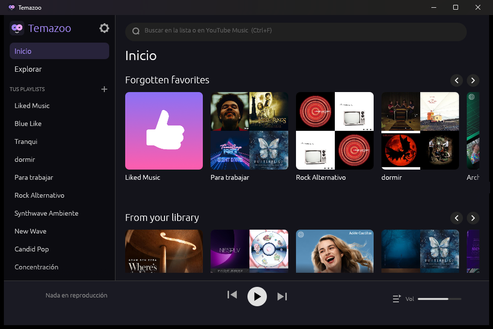

YouTube Music en tu escritorio, sin gastar 1 GB de RAM. Hecho en Rust para Windows.
Descargar para Windows Código en GitHubWindows 10/11 · se instala sin permisos de administrador

Estantes, categorías y scroll infinito como en YouTube Music.
Canciones, artistas y álbumes, con páginas de artista y discografía completa.
Crear, editar, agregar y quitar canciones. Me gusta con un clic.
Arrastrá para reordenar, precarga la siguiente y sugiere más cuando se acaba.
Elegí la calidad en Configuración. Sigue sonando con la ventana minimizada.
Para las canciones que lo tienen, en la Cola o en pantalla completa. Con la opción apagada no gasta nada.
Sobre el video, con las líneas desvaneciéndose, o en un panel. Pinchá una línea para saltar.
Iniciá una radio desde cualquier canción y mezclá o repetí la cola.
Espacio pausa, Ctrl+←/→ anterior y siguiente, y las teclas de Windows.
Iniciás sesión con una ventana de Google. La sesión se renueva sola.
Avisa cuando hay versión nueva y yt-dlp se mantiene al día.
Descargá Temazoo-Setup-x.y.z.exe, ejecutalo y listo. Crea accesos directos en el escritorio y el menú inicio. En el primer arranque, entrá a Configuración → Iniciar sesión. Tus datos quedan en %LOCALAPPDATA%\Temazoo y no se borran al desinstalar.
El instalador no está firmado, así que SmartScreen puede avisar: "Más información" → "Ejecutar de todas formas".